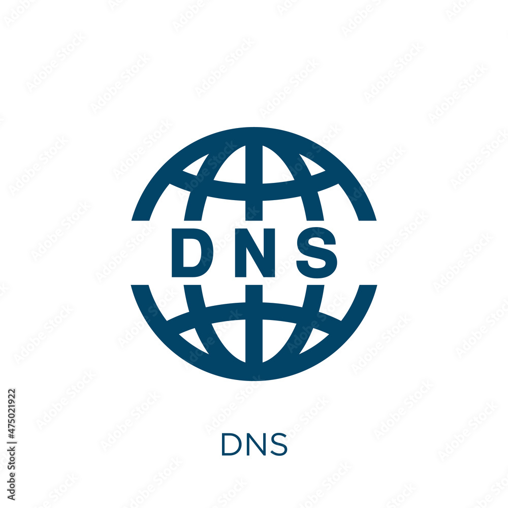

HTTP
HTTP é a sigla para Hypertext Transfer Protocol, ou Protocolo de Transferência de Hipertexto. Esse é o principal protocolo responsável pela transferência de dados na Internet, criando as bases necessárias para a conexão entre um cliente e um servidor.

HTTPS
A sigla HTTPs significa Hypertext Transfer Protocol Secure, ou Protocolo de Transferência de Hipertexto Seguro. O termo é muito parecido com a conhecida sigla HTTP, mas com a diferença do “s” de segurança incluído no final — o que faz toda a diferença, como veremos a seguir.
DNS
O DNS (Domain Name System – Sistema de nome de domínio) converte nomes de domínio legíveis por humanos (por exemplo, www.amazon.com) em endereços IP legíveis por máquina (por exemplo, 192.0.2.44).
FTP
FTP (File Transfer Protocol) é um protocolo de rede para a transmissão de arquivos entre computadores. Dentro do conjunto TCP/IP (Transmission Control Protocol/Internet Protocol), ele é um protocolo da camada de aplicação para o download e upload de arquivos em conexões do tipo cliente/servidor.

DHCP
Um deles é o protocolo DHCP (Dynamic Host Configuration Protocol). Trata-se de uma ferramenta que permite aos computadores obter um endereço IP automaticamente na rede. A ideia é justamente automatizar essa configuração dos endereçamentos das máquinas.
SSH
Secure Shell (SSH) é um protocolo de rede criptográfico para operação de serviços de rede de forma segura sobre uma rede insegura. O melhor exemplo de aplicação conhecido é para login remoto de utilizadores a sistemas de computadores.